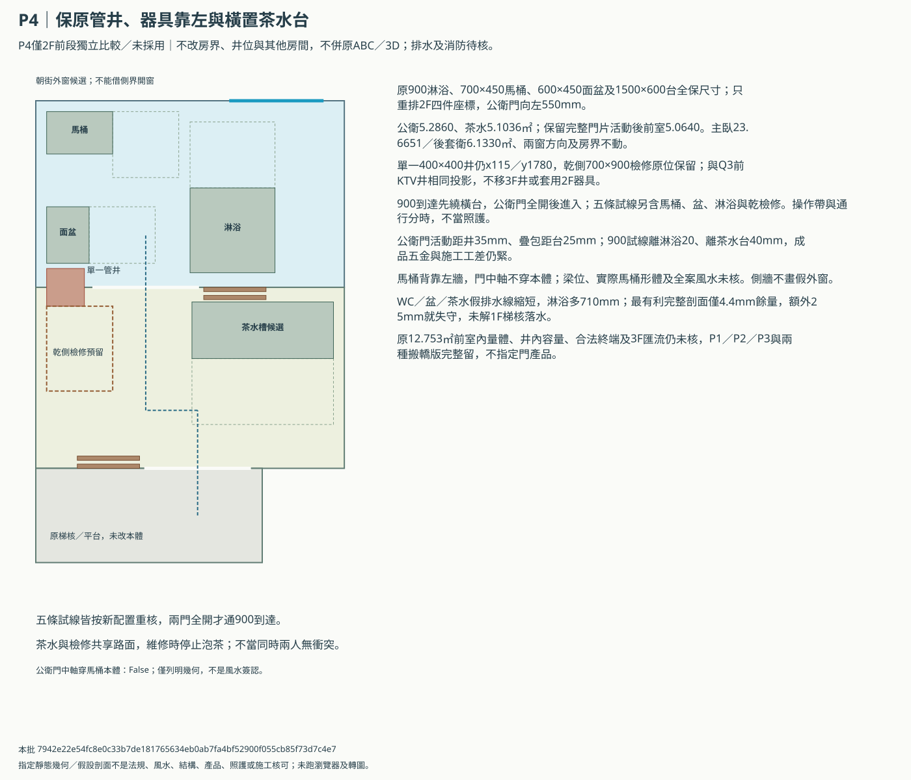
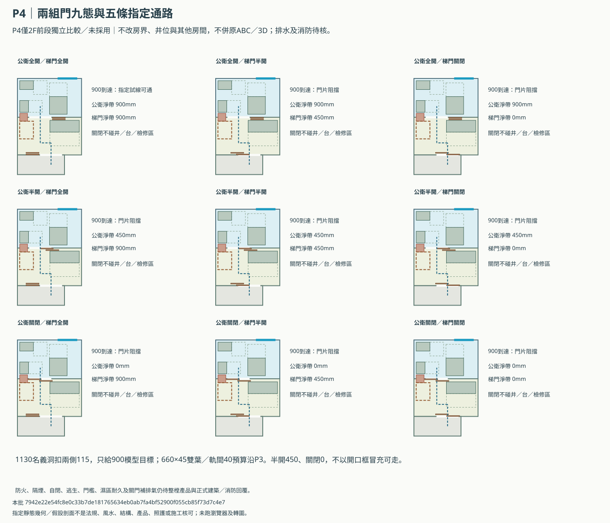
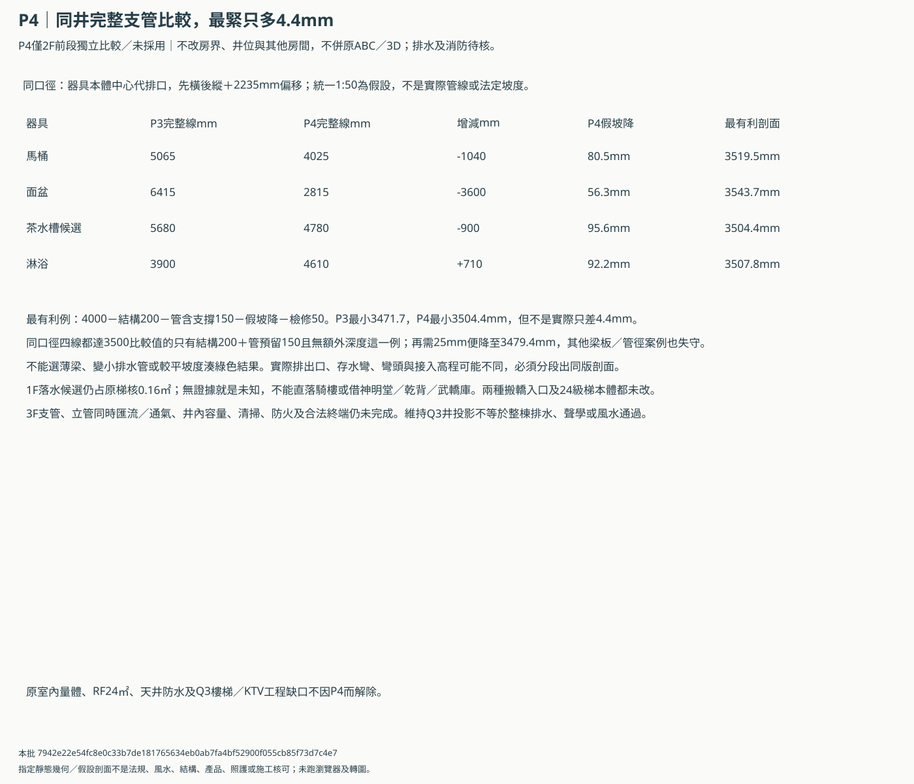

B P4：保原井位，調整前公衛／茶水短支管
獨立2F前段比較／未採用、未併原ABC或3D。只調四件器具及公衛門；最有利算式僅4.4mm餘量，排水與1F梯核落水仍未核。
P4保原房界／井位／乾檢修，靠左WC／面盆、橫置茶水及左移公衛門，讓三條完整排水假線縮短；淋浴增加710mm。保公衛5.286與茶水扣門活動5.064，九門態及五試線同版核算。最有利剖面僅4.4mm餘量，額外25即失守，1F梯核落水與全棟排水未解，不當工程完成或併主3D。
P4配置：原房界、井及乾檢修保留


九種門態：半開與關閉仍不能通900


完整四線與剖面：改善及失守同列


面積口徑與餘量
| 完成面內縮假設mm | 公衛㎡ | 茶水㎡，未扣門活動 |
|---|---|---|
| 80 | 5.6122 | 5.4256 |
| 115 | 5.286 | 5.1036 |
| 150 | 4.97135 | 4.79315 |
115mm模型茶水扣完整門片移動後5.064㎡；其他口徑亦須再核門組，不能用較薄完成面硬保面積。
小餘量，不是產品已可用
| 項目 | 平面距離mm |
|---|---|
| bath_full_travel_to_shaft_mm | 35.0 |
| bath_full_travel_to_counter_mm | 25.0 |
| arrival_to_shower_body_mm | 20.0 |
| arrival_to_counter_body_mm | 40.0 |
帶給建築／機電及門商
- P4只重排2F前公衛與茶水的器具／門位置，房間輪廓、前量體、兩窗方向、管井、乾檢修、梯門及其他房間不變；P1／P2／P3與原ABC／3D、兩種搬轎版保留，未採用。
- 同一400×400井維持115／1780，與Q3前KTV保留井同投影，不把本輪器具改動套到3F，亦不因此宣稱3F支管及全棟新風完成。
- 器具尺寸完全保留但4件座標調整，公衛門左移550mm；馬桶背靠左實牆，門中軸不穿馬桶本體，只是指定視線檢查，不是全案風水或梁位核可。
- 同115mm完成面模型保公衛5.286、茶水5.1036，扣完整門片移動仍5.064㎡；不是實際牆柱或法定面積，較厚完成面另列失敗案例。
- 前公衛兩扇660×45葉、40軌間及1130名義洞保原尺寸；全開目標900、半開450、關閉0，不把普通疊門當防火／隔煙／自閉或照護商品。
- 公衛門片全活動距管井35mm、疊包距茶水台25mm；900到達帶距淋浴及茶水台20／40mm，餘量緊，實際框、把手、五金、牆厚與工差均未核。
- 乾側700×900檢修不在茶水台上方，改從台後繞行。維修、泡茶與通行有操作帶共用，不能稱兩人同時可用；完整工具／拆管與衛生密封仍未知。
- 排水沿P3同一器具中心、先橫後縱＋2235偏移、統一1:50假設；不是實際排出口、彎頭、管徑、坡度或分段高程，不把支管短當重力排水完成。
- WC／面盆／茶水總線縮短，淋浴總線比P3增加710mm；完整四線一起列，不能只挑改善項或只算偏移。
- 最有利200結構＋150管含支撐＋50檢修假設四線才都達3500比較值，最緊只多4.4mm；額外25mm深度就失守，不選薄梁或降低坡度湊通過。
- 額外深度只指原150管含支撐未包含的增量，不重複計同一彎頭／支架；實際分段接入標高與何處控制最低淨高須機電及結構剖面核對。
- 1F400×400落水候選仍占原梯核0.16㎡，並非可用空井；不直落騎樓、不借神明堂／乾背／武轎庫，不預設粉碎泵或抬地坪。
- 3F支管、立管匯流容量、通氣、合法終端、全程清掃及穿梁／防火未設計；前量體12.753㎡每層也仍待申照，不能宣稱32地坪內就可施工。
- P4不解Q3聲學／樓梯、RF24㎡、R1天井防水乾衣及其他工程缺口。源頭排氣、一般新風、浴廁排氣、雨水及污水通氣仍分系統。
routes.csv／door-states.csv／drainage-lengths.csv／section-scenarios.csv／actual-outlets.csv／engineering-replies.csv
本批 7942e22e54fc8e0c33b7de181765634eb0ab7fa4bf52900f055cb85f73d7c4e7；未執行瀏覽器、WebGL或轉圖，未收到實際產品／基地／梁板資料，也沒有法規、風水、照護、消防或施工核可。